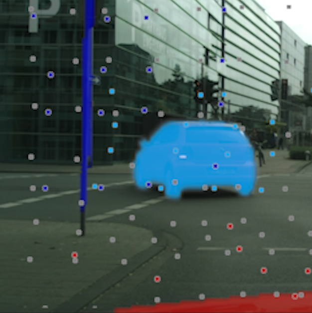
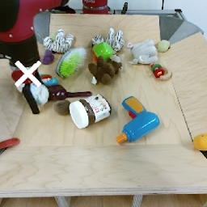
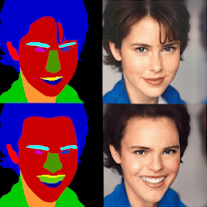
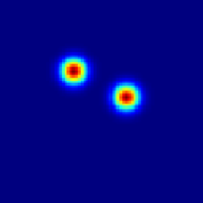
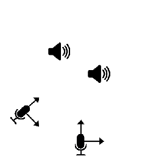

I am a third-year PhD student in computer vision at WILLOW, a joint research laboratory between the Department of Computer Science of École Normale Supérieure (ENS) and Inria Paris, working under the supervision of Cordelia Schmid and Jean Ponce. I am interested in computer vision, deep learning and generative modeling. I have been working on controllable image and video synthesis, with downstream prediction tasks like anticipating the future, and creative applications like content editing. I have received a MSc degree in Executive Engineering from École des Mines de Paris and a MSc degree in Artificial Intelligence, Systems and Data from PSL Research University.

@inproceedings{lemoing2022waldo,
title = {{WALDO}: Future Video Synthesis using Object Layer Decomposition and Parametric Flow Prediction},
author = {Guillaume Le Moing and Jean Ponce and Cordelia Schmid},
booktitle = {ICCV},
year = {2023}
}
This paper presents WALDO (WArping Layer-Decomposed Objects), a novel approach to the prediction of future video frames from past ones. Individual images are decomposed into multiple layers combining object masks and a small set of control points. The layer structure is shared across all frames in each video to build dense inter-frame connections. Complex scene motions are modeled by combining parametric geometric transformations associated with individual layers, and video synthesis is broken down into discovering the layers associated with past frames, predicting the corresponding transformations for upcoming ones and warping the associated object regions accordingly, and filling in the remaining image parts. Extensive experiments on multiple benchmarks including urban videos (Cityscapes and KITTI) and videos featuring nonrigid motions (UCF-Sports and H3.6M), show that our method consistently outperforms the state of the art by a significant margin in every case. Code, pretrained models, and video samples synthesized by our approach can be found in the project webpage.

@inproceedings{lemoing2021ccvs,
title = {{CCVS}: Context-aware Controllable Video Synthesis},
author = {Guillaume Le Moing and Jean Ponce and Cordelia Schmid},
booktitle = {NeurIPS},
year = {2021}
}
This presentation introduces a self-supervised learning approach to the synthesis of new video clips from old ones, with several new key elements for improved spatial resolution and realism: It conditions the synthesis process on contextual information for temporal continuity and ancillary information for fine control. The prediction model is doubly autoregressive, in the latent space of an autoencoder for forecasting, and in image space for updating contextual information, which is also used to enforce spatio-temporal consistency through a learnable optical flow module. Adversarial training of the autoencoder in the appearance and temporal domains is used to further improve the realism of its output. A quantizer inserted between the encoder and the transformer in charge of forecasting future frames in latent space (and its inverse inserted between the transformer and the decoder) adds even more flexibility by affording simple mechanisms for handling multimodal ancillary information for controlling the synthesis process (e.g., a few sample frames, an audio track, a trajectory in image space) and taking into account the intrinsically uncertain nature of the future by allowing multiple predictions. Experiments with an implementation of the proposed approach give very good qualitative and quantitative results on multiple tasks and standard benchmarks.

@inproceedings{lemoing2021palette,
title = {Semantic Palette: Guiding Scene Generation with Class Proportions},
author = {Guillaume Le Moing and Tuan-Hung Vu and Himalaya Jain and Patrick P{\'e}rez and Matthieu Cord},
booktitle = {CVPR},
year = {2021}
}
Despite the recent progress of generative adversarial networks (GANs) at synthesizing photo-realistic images, producing complex urban scenes remains a challenging problem. Previous works break down scene generation into two consecutive phases: unconditional semantic layout synthesis and image synthesis conditioned on layouts. In this work, we propose to condition layout generation as well for higher semantic control: given a vector of class proportions, we generate layouts with matching composition. To this end, we introduce a conditional framework with novel architecture designs and learning objectives, which effectively accommodates class proportions to guide the scene generation process. The proposed architecture also allows partial layout editing with interesting applications. Thanks to the semantic control, we can produce layouts close to the real distribution, helping enhance the whole scene generation process. On different metrics and urban scene benchmarks, our models outperform existing baselines. Moreover, we demonstrate the merit of our approach for data augmentation: semantic segmenters trained on real layout-image pairs along with additional ones generated by our approach outperform models only trained on real pairs.


@inproceedings{lemoing2021ssl,
title = {Data-Efficient Framework for Real-world Multiple Sound Source 2D Localization},
author = {Guillaume Le Moing and Phongtharin Vinayavekhin and Don Joven Agravante and Tadanobu Inoue and Jayakorn Vongkulbhisal and Asim Munawar and Ryuki Tachibana},
booktitle = {ICASSP},
year = {2021}
}